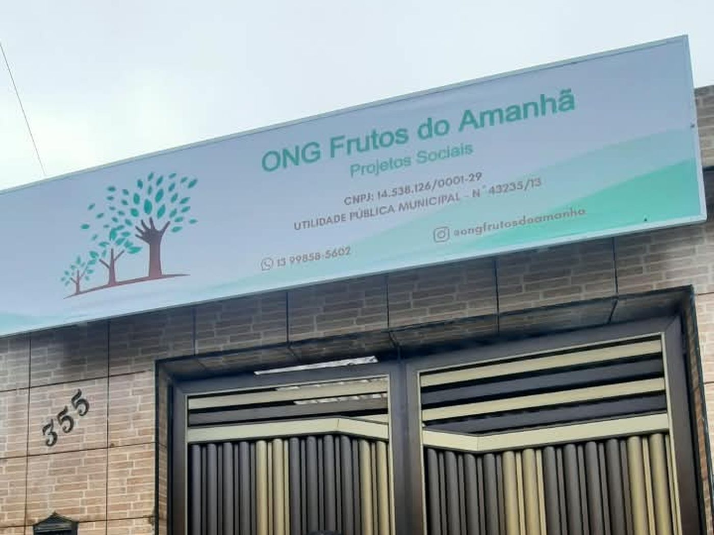
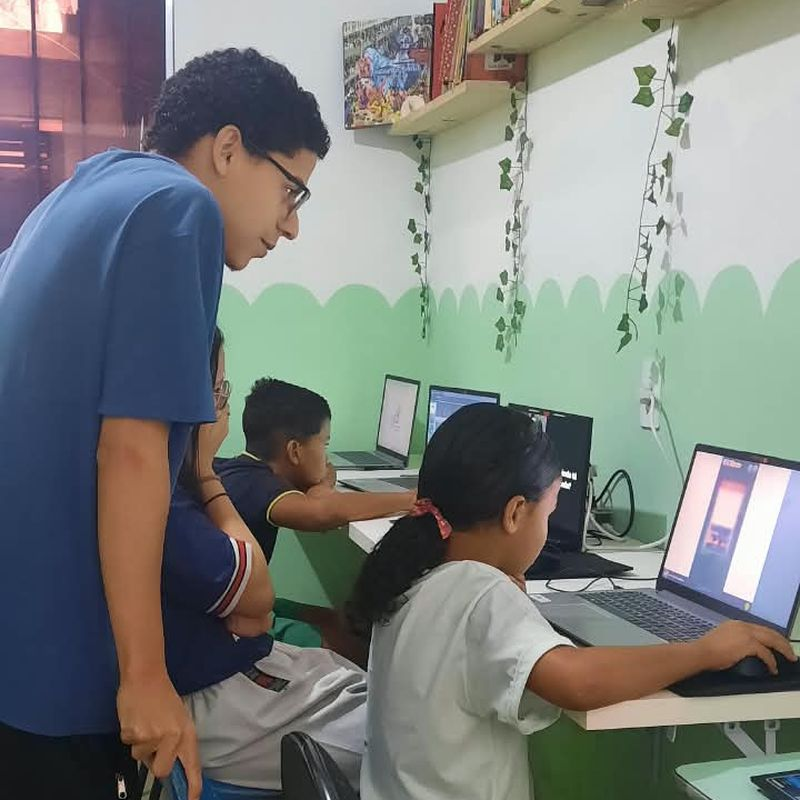
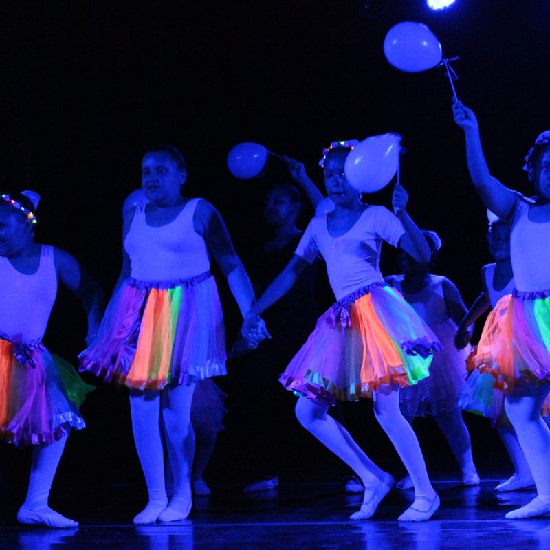
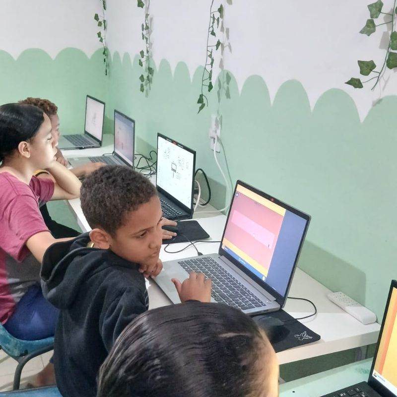
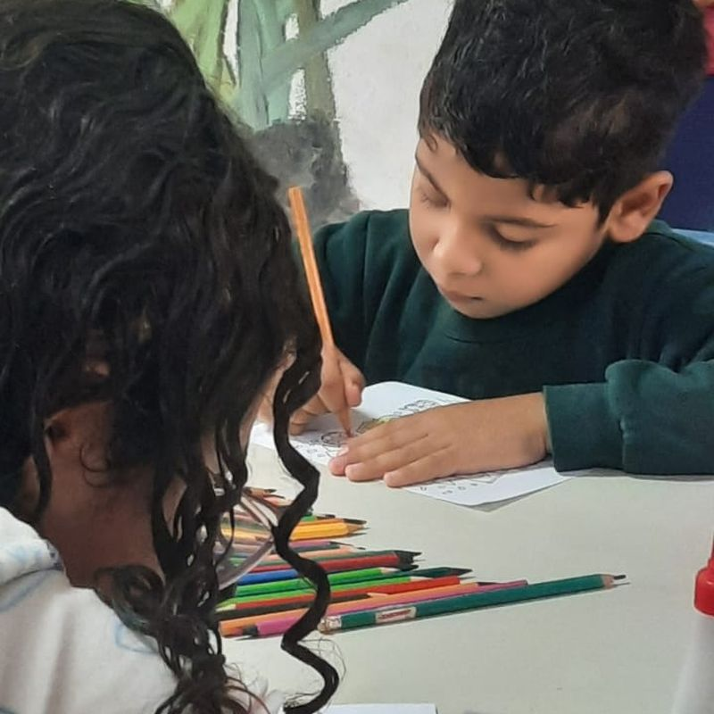
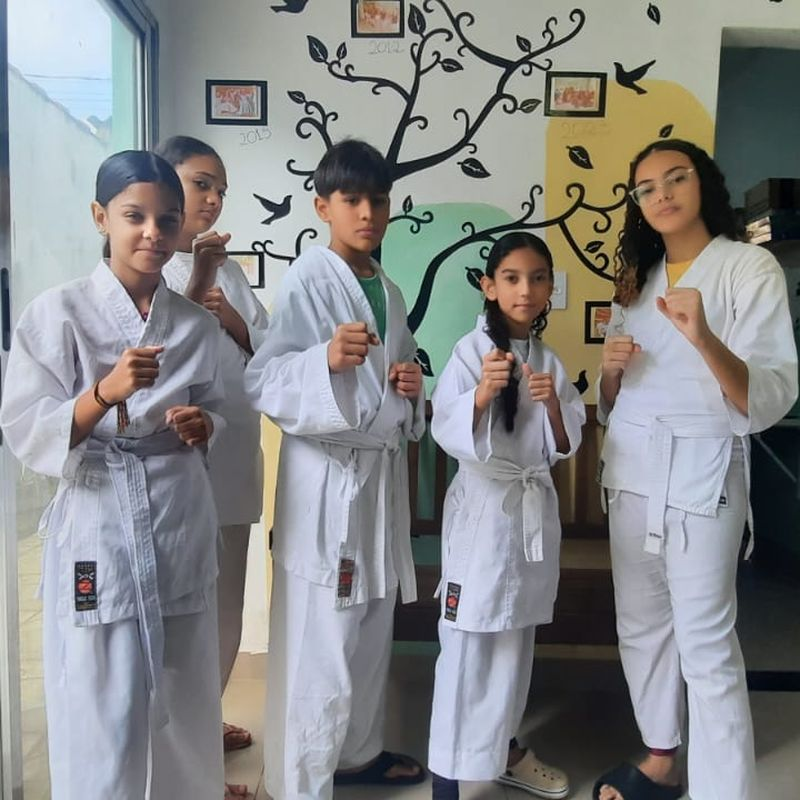
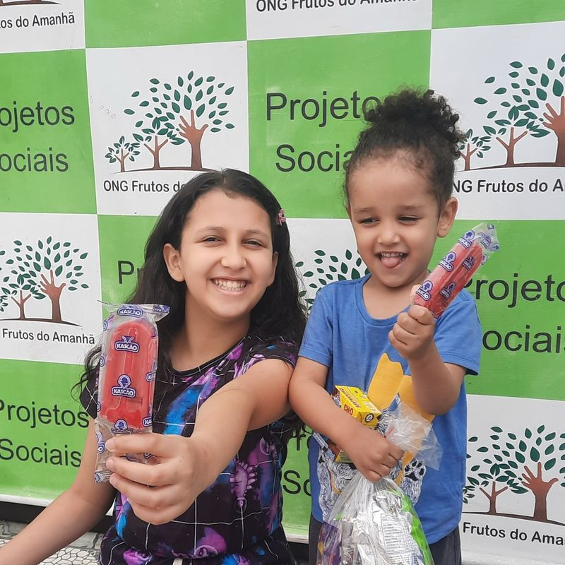

Educação
Reforço escolar no contraturno, material didático e acompanhamento das notas ao longo do ano letivo.
Quem somos
A Frutos do Amanhã acolhe crianças, adolescentes e famílias de São Vicente e Praia Grande com educação, cultura, esporte e empreendedorismo.
Em 9 de fevereiro de 2011, Heloisa Morais decidiu transformar o próprio quintal, na Vila Matias, em um espaço de estudo e convivência para as crianças da vizinhança. Não havia estrutura, só a disposição de atender quem aparecia.
De lá para cá, o quintal virou sede e as atividades passaram a ocupar a semana inteira: reforço escolar, oficinas, treinos e cursos. A ONG atende hoje cerca de 250 famílias e 300 crianças e adolescentes em São Vicente e Praia Grande.
O jeito de trabalhar continua o mesmo: acolher, ensinar e caminhar junto com quem mais precisa, sem burocracia e sem lista de espera.
Educação, Respeito e Disciplina.
Lema da Frutos do Amanhã

Oferecer educação, cultura, esporte e oportunidades de renda para crianças, adolescentes e famílias em situação de vulnerabilidade na baixada santista.
Que nenhuma criança da região fique fora da escola ou sem um lugar seguro para passar o contraturno.
Acolhimento sem triagem, respeito às famílias, transparência no uso das doações e presença diária na comunidade.
As quatro frentes acontecem ao mesmo tempo, ao longo de toda a semana, e se completam.
Reforço escolar no contraturno, material didático e acompanhamento das notas ao longo do ano letivo.
Oficinas de música, dança e artes, além de saídas culturais pela região com as turmas.
Turmas de futebol e atividades coletivas que ensinam disciplina, convivência e respeito às regras.
Cursos e apoio para que as mães e os jovens gerem a própria renda e ganhem autonomia.
Fotos das atividades de 2026, na Rua Geralda Martins de Oliveira.

Treino de karatê no contraturno

Apresentação da oficina de dança

Aula na sala de informática

Oficina de desenho e pintura

Turma de karatê na sede

Dia das Crianças na sede
A sede fica na Vila Matias, em São Vicente, e recebe as atividades diárias. As entregas da Feirinha da Criança também acontecem em Praia Grande, atendendo famílias das duas cidades.
Quem quiser conhecer o trabalho de perto pode visitar a sede de segunda a sexta, das 9h às 17h. Avise antes pelas redes sociais para que alguém possa receber você.
Você pode ajudar doando qualquer valor, entregando itens na sede ou entrando para o grupo de voluntários.